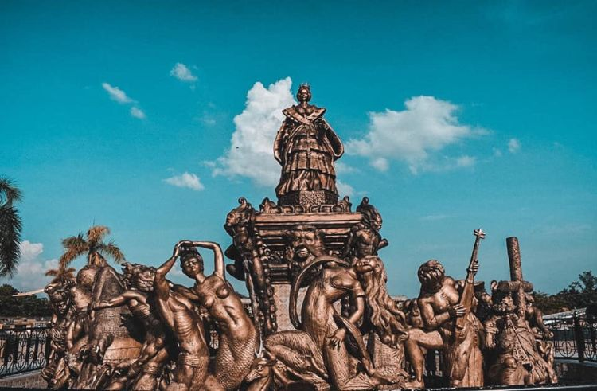

History
Isabela was officially established in 1856 and named after Queen Isabella II of Spain. Over the centuries, it has been shaped by indigenous communities, Spanish colonization, and waves of settlers from neighboring regions. The province grew as a major agricultural hub, particularly for rice and corn, which remain central to its economy and culture today.
Geography
Located in the northern part of Luzon, Isabela is the largest province in the Cagayan Valley region. It features a diverse landscape of fertile plains, rolling hills, rivers, and mountain ranges. The province is home to natural attractions like the Sierra Madre mountains, Dibulo Falls, and the Abuan River, making it ideal for nature lovers and adventurers.
Culture and People:
Isabeleños are known for their warm hospitality, agricultural ingenuity, and rich traditions. Local festivals, crafts, and culinary specialties reflect the province’s heritage and community spirit, offering visitors a glimpse into both history and daily life.
Gallery


